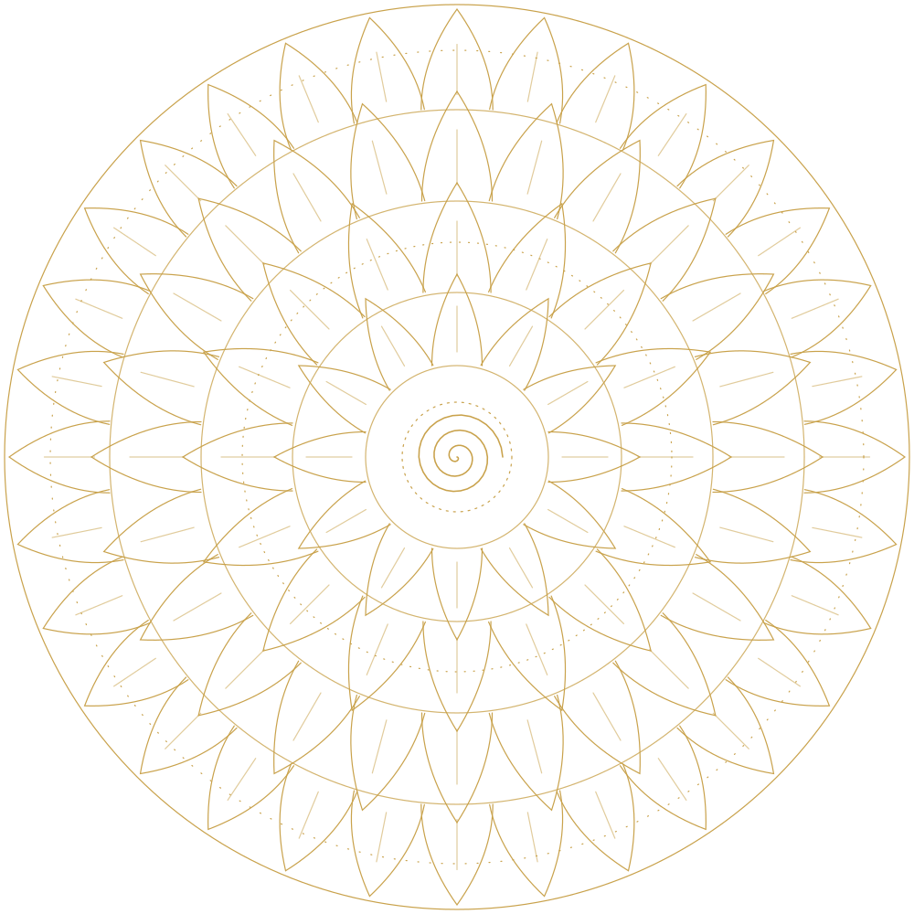

Past Life Regression
Explore memories and imagery from other lifetimes that may hold the root of present-day fears, relationship patterns and unexplained emotions.
॥ श्री हनुमते नमः ॥
Certified Therapist · IPHM (UK) accredited training
Past Life Regression Therapist
& Transpersonal Hypnotherapist
Journey within. Heal from the root.
Delhi · Online via video call

The practice
A fear with no clear cause. A headache that returns with every stressful week. A relationship story that keeps repeating. Often the root sits deeper than the conscious mind can reach.
Through deep, guided relaxation, Past Life Regression and Transpersonal Hypnotherapy help you turn inward safely — to meet the memories, feelings and images behind today’s patterns, and to release what you no longer need to carry.
You stay aware and in control throughout every session.
Dhiraj Sarda is a certified Past Life Regression Therapist and Transpersonal Hypnotherapist based in Delhi, trained at the International Past Life Academy (IPLA). He guides each session with patience, warmth and complete confidentiality.
Heal what was. Choose what comes next.
A private, supportive space
Paced to you, always
You stay in control
Therapies
Explore memories and imagery from other lifetimes that may hold the root of present-day fears, relationship patterns and unexplained emotions.
Deep, guided relaxation that works with the subconscious mind — for stress, habits, confidence, sleep and emotional release.
Meet the younger you who still carries old hurt, fear or loneliness — and give that child the safety, love and understanding they needed.
Revisit earlier moments of this life that still shape how you think, feel and react today.
Gently explore the earliest impressions — in the womb and around birth — that may lie beneath deep-seated feelings.
Calming meditation and breathwork to quiet the mind, release tension and return to inner peace.
Private video call, anywhere
In Delhi, by appointment
Individual sessions for adults
Healing areas
Tap a circle to explore
Calm a restless mind
Ease what the body carries
Heal old emotional wounds
Reconnect with purpose
Mind–body support. Many physical conditions are made worse by stress and held-in emotion. Sessions work alongside your doctor’s treatment — please continue your medicines.
Not sure where your concern fits? Share it in confidence on WhatsApp — we’ll find the right approach together.
A moment for you
Before anything else, let your body settle. Follow the lotus — breathe in as it opens, hold gently, and breathe out slowly as it closes.
Tip: turn on the calm sound for a soft tanpura drone.
Your session
You share what you’re facing and what you hope for. Every question is answered.
Gentle guidance into a calm, focused, safe inner state.
You explore and release, with me beside you, at a pace that feels right.
We close gently and reflect on what you carry forward.
My inspiration
Hanuman ji had forgotten his own boundless strength — until Jambavan reminded him, and he leapt across the ocean. I believe each of us carries a strength like that, quietly forgotten beneath old fears and patterns. My work is simply to help you remember it.
नासै रोग हरै सब पीरा।
जपत निरंतर हनुमत बीरा॥
“Illness fades and every pain is eased for the one who keeps remembering brave Hanuman.”
Shri Hanuman Chalisa
With faith in Hanuman ji — Sankat Mochan, the remover of troubles.
Certified Therapist
Dhiraj Sarda
Past Life Regression, Transpersonal Hypnotherapy, Age & Womb Regression Diploma
115 hours of theory & practice
Accredited by IPHM, UK
Reg. 202610_28 · October 2026
Qualified & accredited
Dhiraj has completed the Past Life Regression, Transpersonal Hypnotherapy, Age & Womb Regression Diploma (115 hours of theory and practice), accredited by the International Practitioners of Holistic Medicine (IPHM), UK, and is qualified to practise.
The original certificate is available to view on request.
Good to know
No. You remain aware and in control, and can open your eyes and end the session at any time.
No. These sessions are complementary. Keep following your doctor’s advice; healing work can support you alongside it.
No. Whether you see the imagery as memory or as metaphor, it can still bring meaningful insight and relief.
Yes — over a private video call, or in person in Delhi.
Begin
Message on WhatsApp to book your first conversation.